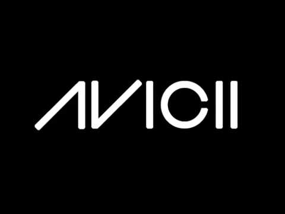
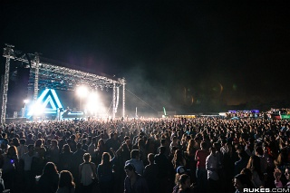
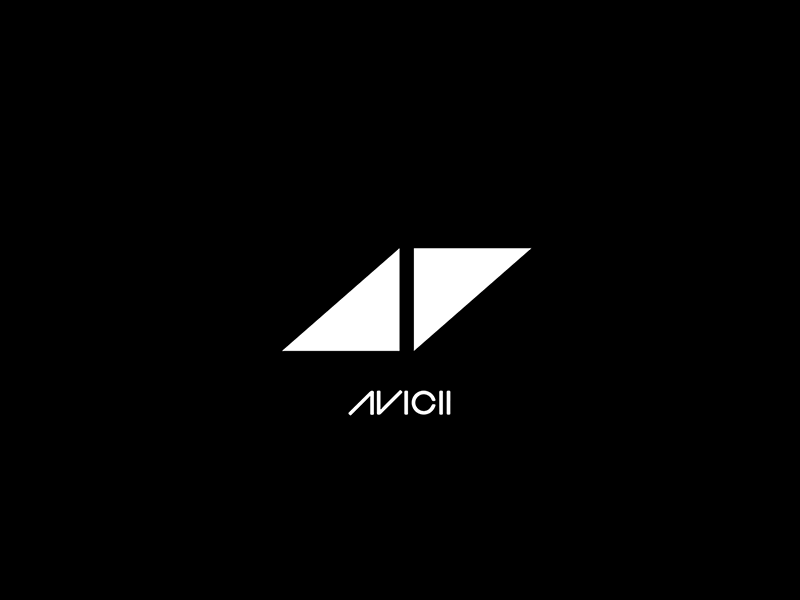
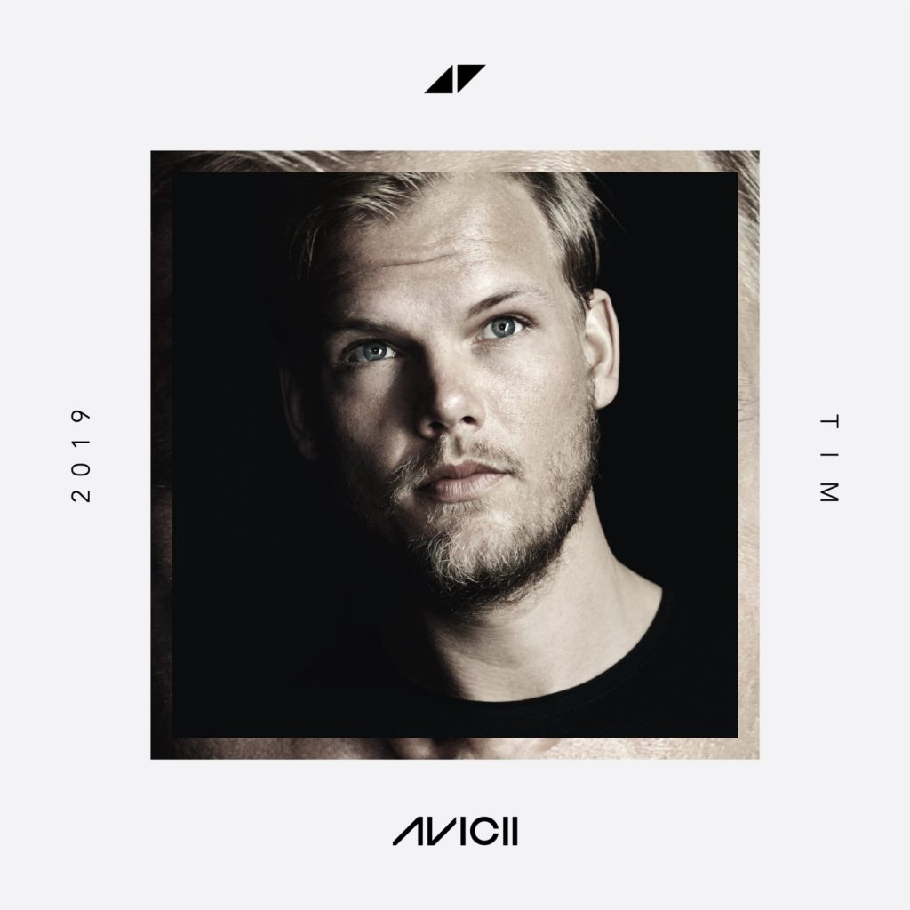

AVICII
¿Quién es Avicii?
Significado del nombre Avicii
En una entrevista realizada por Vicious Magazine, Tim Bergling dijo que Avicii con una sola i significa el nivel más bajo del infierno budista; declaró: "...Un amigo me lo dijo y simplemente se me quedó grabado… Poco después, al crear mi página en Twitter tuve que elegir un nombre de usuario, y todos los demás que tenía en mi mente ya estaban usados. Avicii estaba disponible, por eso lo usé, y desde entonces ha seguido conmigo…"
Trayectoria y legado
En 2010, Avicii publicó otra venta junto con el DJ sueco de nombre John Dahlbäck, titulado "Don't Hold Back", bajo el alias Jovicii. También trabajó con otros productores reconocidos en la escena electrónica como los holandeses Nicky Romero y Shermano logy o los franceses Norman Doray y Sebastien Drums, entre otros. Aunque su trabajo se centra en canciones electrónicas, EMI puso a la venta una versión con vocales de su canción Bromance, con el título "Seek Bromance".
En octubre de 2010, Avicii firmó un contrato con la discográfica europea A&R con EMI Music Publishing. Con lugar Londres y Nueva York, EMI es la cuarta empresa musical más grande y es productora de otras empresas, esto la hace ocupar ese cuarto puesto y la hace miembro de la RIAA (Recording Industry Association of America). En 2010, Avicii se embarcó en su primera gira mundial, empezando por Norte América y Europa del este.
En 2010, Avicii logró colocarse en el puesto 39 en la lista de los 100 mejores DJs de la revista "DJmag". El 2011 le sonríe a Avicii, el joven productor se consolida como el sexto mejor DJ del mundo. Ya en el 2012 logra escalar tres lugares para posicionarse en el tercer puesto según la revista DJ Mag, siendo el Dj más joven dentro del TOP 10. En 2013, logró conservar la tercera ubicación en la encuesta.
Su sencillo "Bromance" (grabado y puesto a la venta bajo el seudónimo Tim Berg) consiguió entrar en el top 20 de Bélgica, Países Bajos y su nativa Suecia. Una versión vocal llamada "Seek Bromance" con Amanda Wilson, fue puesta a la venta poco después, alcanzando el UK Singles Chart y alcanzando el puesto nº 1 internacional en Beatport. Posteriormente ha lanzado varios singles como "Fade Into Darkness", (contiene los samples de Perpetuum Mobile), "My Feelings for You", "Street Dancer", y "Tweet It" entre otras. Su reconocimiento mundial llegaría en el 2011, cuando realizó un sampleo de la canción de música gospeloriginal de 1962, "Something's Got a Hold on Me" de Etta James, en su éxito "Levels", el cual logró ingresar en las listas musicales más importantes del mundo y obtuvo numerosas certificaciones. En ese mismo año fundaría su propia discográfica LE7ELS. En 2013 consigue su primer número uno en el Reino Unido gracias a "I Could Be the One", una co-producción junto al DJ holandés Nicky Romero. En junio de 2013, lanzó el sencillo "Wake me up" Con las voces del cantante estadounidense Aloe Blacc, logrando alcanzar el número uno en más de 30 países incluyendo Reino Unido, Suecia, Países Bajos, Australia, España y Alemania, entre otros. Éste fue el primer sencillo de su álbum debut titulado "Truelanzado" el 13 de septiembre de 2013. Le sucedieron sencillos como You Make Me y "Hey Brother", logrando éste último, la primera ubicación en países como Suecia, Alemania y Países Bajos, entre otros.
En 2011, por primera vez Avicii y el DJ francés David Guetta realizan una co-producción titulada: "Sunshine", la cual fue incluida en el álbum "Nothing but the Beat", de David Guetta, en la versión electrónica de dicho álbum. Además fue nominada a los Premios Grammy como "Mejor Grabación Dance" en el año 2011. Su sencillo Levels fue nominado en la categoría "Mejor Grabación Dance" en los Premios Grammy de 2012. El 10 de noviembre de 2013, ganó el premio “Mejor Artista Electrónico” en los MTV EMA.
En Norte América, "pinchó" en el Club Glow, en Washington, D.C.; en SET and Nikki Beach en Miami; en Club Pacha en Nueva York; en el Electric Zoo Festival en la isla Randall de Nueva York; en el Electric Daisy Carnival en Los Angeles Memorial Coliseum; en Ruby Skye de San Francisco; en Vision Night Club de Chicago; en The Guvernment de Toronto; además de Waterloo, Ontario; en el Club Mansion de London, Ontario; y en Wet Republic's Daylife en Las Vegas.
Ha estado también en numerosas ciudades europeas y lugares como el Space y Ushuaia en Ibiza; en BCM en Magaluf (Mallorca), en elOpium (Barcelona) de Barcelona; en el Mónaco International Clubbing Show del Grimaldi Forum de Mónaco; en el Fabulous Festival deHertogenbosch, Países Bajos y en el Tomorrowland de Bélgica.
En Sudamérica participó en el año 2013 en el Ultra Music Festival recorriendo países como Argentina, Chile, Brasil, Colombia y Venezuela.
Algunos de estos conciertos han sido grabados por el canal de radio "Sirius XM" de música progressive y trance. El 23 de octubre de 2010, para reforzar su gira mundial, Avicii presentó un trabajo exclusivo de una hora en la radio Sirius XM. En noviembre de 2012 visitó El Salvador, dando un concierto en CIFCO. Su gira 2012 terminó el 10 de noviembre con una presentación en la ciudad de Monterrey ante más de 20.000 espectadores.
Muerte de Avicii
Avicii falleció, a sus 28 años de edad, el viernes, 20 de abril de 2018. Fue encontrado muerto en Mascate, la capital de Omán, según informó su representante a través de un comunicado de prensa en donde no especificó detalles acerca del fallecimiento.
"Con profunda pena anunciamos la pérdida de Tim Bergling, también conocido como Avicii", puntualizó la declaración del mánager.
"Fue encontrado muerto en Muscat, Omán, este viernes por la tarde. La familia está devastada y les pedimos a todos que respeten su necesidad de privacidad en este momento difícil. No se darán más declaraciones", agregó la declaración.
Para ver sus álbumes presiona la siguiente imagen
